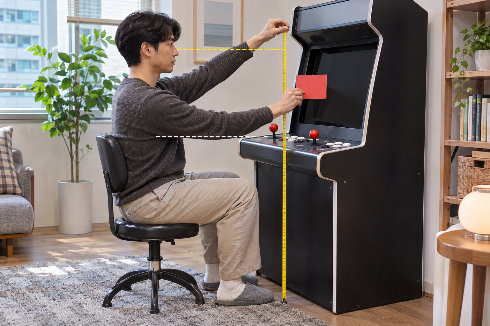
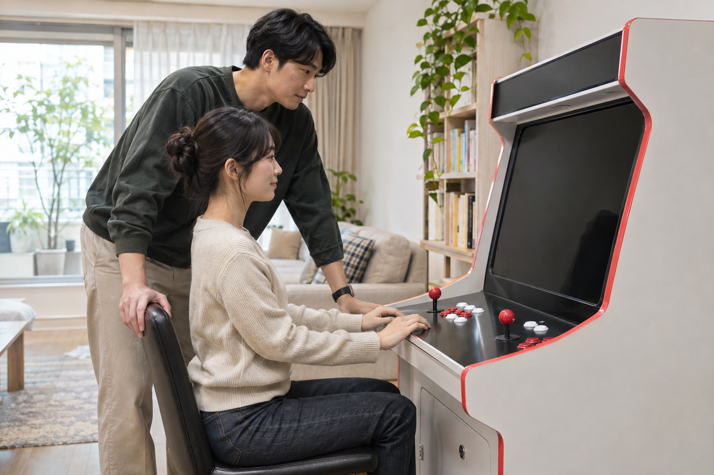

오락기 화면과 눈높이는 실제로 조작하는 자리에 앉거나 선 상태에서 고개를 과하게 들거나 숙이지 않고 화면 전체를 볼 수 있게 맞추세요. 화면 중심을 눈과 정확히 같은 높이에 고정하기보다 의자·조작부 높이와 화면까지의 거리, 사용자의 평소 자세를 함께 확인하는 것이 중요합니다.

실제 조작 위치에서 시선을 확인하세요
전원을 끈 상태에서 평소처럼 조작할 자리에 앉거나 서고, 허리를 억지로 세우지 않은 자연스러운 자세로 화면을 바라보세요. 화면 위아래를 볼 때 고개를 크게 움직여야 하는지, 화면 가장자리와 조작부를 번갈아 볼 때 자세가 계속 바뀌는지 확인하면 조정할 부분을 찾기 쉽습니다. 제품을 기울이거나 분해하지 말고 먼저 의자 위치와 거리처럼 외부에서 바꿀 수 있는 조건부터 살펴보세요.
눈높이는 실제 조작 위치에서 화면 전체를 볼 때 머리와 몸이 자연스러운지를 기준으로 확인해야 합니다.
- 평소 사용하는 앉은 자세 또는 선 자세
- 눈에서 화면까지의 거리
- 화면 위·아래를 볼 때 머리 움직임
- 조작부를 사용할 때 팔과 어깨의 위치
화면 크기와 보는 거리를 함께 비교하려면 가정용 오락기 화면 크기 비교 방법을 참고하세요.
화면 중심은 시작점으로만 사용하세요
눈높이와 화면 중심을 가볍게 비교하되, 두 위치가 정확히 일치해야 한다고 단정하지 마세요. 화면의 기울기와 크기, 앉는 거리, 게임 화면에서 자주 보는 영역에 따라 편하게 느끼는 위치가 달라질 수 있습니다. 전원이 켜진 상태를 확인할 때는 화면 밝기나 주변 빛 때문에 자세를 바꾸고 있지 않은지도 살펴보세요.
화면 중심은 눈높이를 맞추는 출발점이며 최종 기준은 전체 화면을 보는 실제 자세입니다.
조작부와 의자 높이를 함께 맞추세요
화면만 올리거나 내리면 손목과 팔꿈치가 불편해질 수 있으므로 조작부 높이도 함께 확인하세요. 의자에 앉았을 때 발이 안정적으로 닿고, 팔이 조작부에 자연스럽게 놓인 상태에서 화면을 볼 수 있는지 살펴보는 순서가 좋습니다. 임시 물건을 여러 겹 쌓아 높이를 바꾸기보다 안정적인 의자나 제품에 맞는 받침 방법을 확인하세요.
화면과 조작부는 같은 자세에서 함께 확인해야 시선과 손의 위치를 동시에 맞출 수 있습니다.
의자와 받침대를 고르는 기준은 가정용 오락기 의자와 받침대 선택 방법에서 확인할 수 있습니다.

여러 사용자의 자세를 따로 비교하세요
가족이 함께 사용한다면 키가 다른 사람마다 같은 자리에서 화면과 조작부를 확인하세요. 한 사람에게 맞는 높이를 모든 사용자에게 적용하지 말고, 의자 위치나 앉는 거리처럼 안전하게 바꿀 수 있는 조건을 기록해 두면 번갈아 사용할 때 다시 맞추기 쉽습니다.
여러 사람이 쓰는 오락기는 사용자마다 시선과 조작 자세를 따로 확인해 공통 범위를 찾아야 합니다.
노리박스 공개 제품 목록에는 27+와 32+처럼 화면 크기가 다른 제품과 TV 연결형 제품이 각각 안내되어 있습니다. 제품 형태에 따라 화면과 조작부의 관계가 다르므로 다른 제품의 설치 사진을 그대로 기준으로 삼지 말고, 구매한 정확한 제품명과 사용 위치를 기준으로 확인하세요.
현재 판매 중인 제품 형태는 제품자세히보기에서 확인할 수 있습니다. 화면 위치와 조작 자세를 함께 맞추기 어렵다면 문의하기에서 정확한 제품명과 앉거나 서서 사용하는 방식을 알려 주세요.